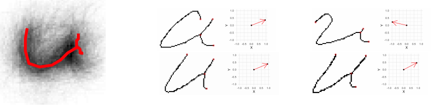
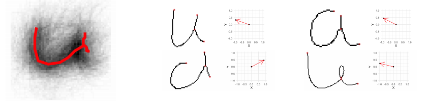
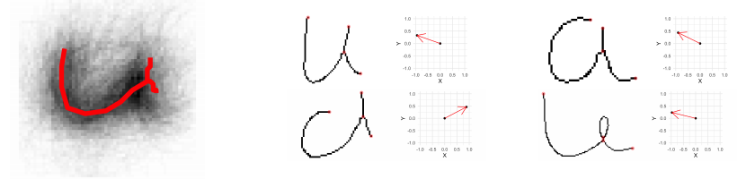

Methods
Here we will go into the methods and inner workings of the project
Briefly...
The project has 3 major working parts.
- Data Collection
- Collect handwriting samples
- Scan, load, and crop images via batch processing
- Computational Tools
- Binarize: Turn image to black and white
- Skeltonize: Reduce writing to 1 pixel wide
- Break into glyphs: Decompose into managable pieces
- Measure: Extract various measurements of these glyphs
- Statistical analysis
- Clustering: Separate glyphs based on shape
- Model: Fit a statistical model to the data
- Identify: Identify a writer in a closed set
Data Collection
We are conducting a large data collection study to gather handwriting samples from a variety of participants across the world (most in the Midwest). Each participant provides handwriting samples at three sessions. Session packets are prepared, mailed to participants, completed, and mailed back.
Once recieved, we scan all surveys and writing samples. Scans are loaded, cropped, and saved using a Shiny app. The app also facilitates survey data entry, saving that participant data to lines in an excel spreadsheet.
A public database of handwriting samples we have collected can be found at forensicstats.org/handwritingdatabase.
A data article regarding these samples was accepted at Data in Brief
Crawford, A., Ray, A., & Carriquiry, A. (2020). A database of handwriting samples for applications in forensic statistics. Data in brief, 28, 105059.
Computational Tools
handwriter is a developmental R package hosted at github.com/CSAFE-ISU/handwriter.
It is our major computational tool for the project. The package takes in scanned
handwritten documents and the following are performed.
- Binarize - Turn the image into pure black and white
- Skeltonize - Reduce writing to a 1 pixel wide skelton
- Break - Connected writing is decomposed into small manageable pieces called glyphs.
Glyphs are graphical structures with nodes and edges that often, but not always, correspond to Roman letters, and are the smallest unit of observation we consider for statistcal modelling. - Measure - Measure are taken on each glyph
Below is an example we commonly use, the word 'csafe' in cursive. In this example you can see the gray background of the writing, a result of binarization. The colored lines is the single pixel skeleton. The change from green to blue marks the changes after the piece of writing is broken into glpyhs. The red dots are the endpoints and intersections of each glyph.

From this point, measurements are taken on each glyph individually. These measurements are calculated in
Rcpp,
a power package that allows for R functions to be implemented in C++. The measurements we looked at are Rotational Angle, Compactness, and Loops.
Rotation Angle is by far the most useful measurement, but we feel all are worth mentioning.
Rotational Angle
The first principal component for each glyph, or “letter”, is calculated through an eigendecomposition of the covariance matrix. The first principal component enjoys the property of having two invariant directions, and so we take the vector that lies in the upper half plane. The rotation angle of the graph is defined as the angle between the vector (0,1), and the unit principal component vector on the upper half plane. The angle is measured in radians and is considered a feature of the graph defined on the interval (0,π).
Let's walk through an example of how rotational angle can help differentiate between two writers.
Here is the scanned writing of "Our London business is good," from our first writer, writer A:

These measurements are used to differntiate inside of each cluster, so we will look at the cluster of glyphs most similar to the letter 'u' in the roman alphabet.
On the left is the cluster for this glyph. On the right is 4 individual glyphs from the writing, as well as a graph with each glyphs direction of greatest variability Now, the directions determined above are compiled for each cluster from each writer. The compiled graph for the glyph closed to the letter u from our writer A is shown on the left below. This data is then normalized to respect the polar coordinate system, and a curve is fit to approximate the distribuition of the rotation angle, show on the right

The same can be done for a writer B:
 


There is great dispartiy in the distribuition of the rotation angle between writer A and B when dealing with this cluster. We have found this measurement to be the most influential in correctly identifying a writer.
Compactness
Compactness is computed as:

It can be thought of as the tightness of black pixels in each glyph based on distance from the centroid
A compactness value is found, and can be plotted around the centroid as such:

Unfortunatley, while informative for comparing like-sized graphs, this measurement suffers from the inherit spacial dependence between pixels and (unfortunately) does not scale well for modelling.
Loops
The number of loops in a given glyph are found, as well as the height to width ratio of each.
Unfortunatley, we found that most loops in handwriting are generally about the same shape, and didn't produce any useful information in differentiating between writers.
Statistical Analysis
Clustering
Rather than impose rigid grouping rules (the previously used ‘’adjacency grouping’’) we consider a more robust, dynamic K − means type clustering method that is focused on major glyph structural components.
For a clustering algorithim we need two things:
- A distance measure - For us, a way to measure the discrepency between glyphs.
- A measure of center - A glyph-like structure that is the exemplar representation of a group of glyphs.
Glyph Distance Measurement
We begin by defining edge to edge distances. Edge to edge distances are subsequently combined for an overall glyph to glyph distance.
Consider the following single edge glyphs e1 and e2. Make 3 edits to e1 to match e2. Then combine the magnitude of each edit.

Measure 1 (Left) - Shift: Anchor to the nearest endpoint by shifting. In our example, the shift value is 1.4.
Measure 2 (Center) - Stretch: Make the end points the same distance apart. Stretch value of 9.9.
Measure 3 (Right and Bottom) - Shape: Bend and twist the edge using 7 shape points. Shape points are 'matched' and the distance between them is averaged to obtain the shape value. Shape value of 8.4 after averaging

Shape measurements averaged

So, our edge to edge distance: D(e1, e2) = 1.4 + 9.9 + 8.4 = 19.7
Measure of Glyph Centers
For this measurement, we take the weighted average of endpoints, 7 shape points, and edge length

K-means clustering algorithim for glyphs
...
Statistical Modeling
Model #1, Straw Man
...
Model #2, Mixed
...
Model #3, Normal Slopes
...